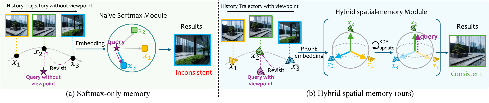

LOCI: Spatial Linear Memory for Streaming World Models
Key idea of LOCI

Figure 1.Projectively conditioned recurrent memory integrates historical context, while retained KV preserves observation-level detail. Recurrent readouts update the features used by subsequent historical attention, connecting the two representations through the feature stream.
Setup
- GT history as memory. The model is first given a recorded clip of the scene (the GT history) as its memory context, then generates the continuation on its own along the recorded camera path.
- Each figure shows three separate videos: the GT history the model received, LOCI's generated continuation, and the recorded continuation for reference. Use Play all to start the three videos together.
- Full history keeps the entire past in memory. Sparse memory keeps a fixed budget of past context plus the most recent frames, so memory cost stays bounded as the video grows.
Results
GT history as memory · full history
9 clipsLOCI conditioned on the complete GT history and everything it has generated so far.
Forest.
City.
Suburb, daytime.
Suburban street.
Temple plaza.
Temple courtyard.
Palace courtyard.
Container harbor at sunset.
Mountain meadow.
GT history as memory · sparse memory
13 clipsThe same setup with LOCI's bounded sparse memory: only a fixed budget of past context is retained, independent of video length.
Suburb, daytime.
Suburban street.
Temple plaza.
Temple courtyard.
Palace courtyard.
Container harbor at sunset.
Mountain meadow.
Snowy village.
Grassy hills.
Desert temple.
College campus.
Tokyo street.
Downtown at dusk.
Clip sources
All clips are rendered game-engine scenes. Held-out clips (not used for training): Forest, City and Temple plaza. Clips from the training data: all other scenes (Suburb, Suburban street, Temple courtyard, Palace courtyard, Container harbor, Mountain meadow, Snowy village, Grassy hills, Desert temple, College campus, Tokyo street, Downtown). Dark night-time clips are not shown.